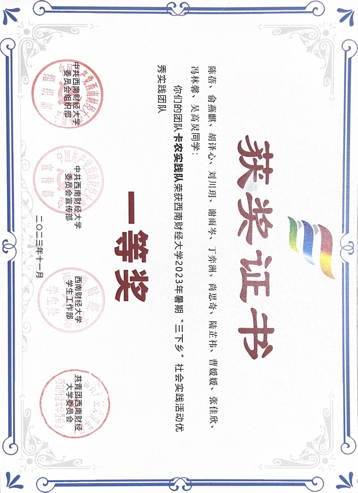
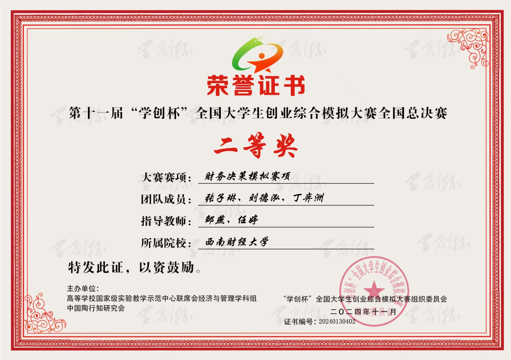
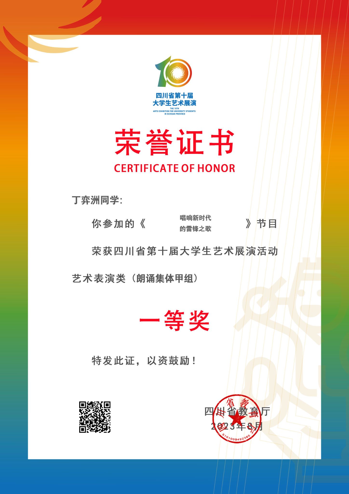

Nanyang Technological University
MSc in Financial Engineering
SingaporeProspective PhD applicant
Incoming MSc student in Financial Engineering at Nanyang Technological University, with interests in computational finance, financial economics, and AI for finance.
I am interested in rigorous quantitative research on financial markets, pricing problems, and data-driven decision systems. My current work combines numerical analysis, empirical investigation, and computational implementation.
Education
MSc in Financial Engineering
SingaporeDual Bachelor's Degree in Financial Mathematics & Finance
GPA: 90.75 / 100 · Chengdu, ChinaResearch
Research is presented here with emphasis on the question, method, and evidence rather than decorative hierarchy.
We develop a fully discrete linear scheme for a nonlinear Black–Scholes type equation arising in option pricing with counterparty risk. The method combines a variable-step Crank–Nicolson approximation, a fourth-order compact spatial operator, and an explicit treatment of nonlinear terms.
Formulated and tested hypotheses on intraday volatility patterns using high-frequency crude-oil and soybean-meal options data. The analysis separated empirical pattern identification from strategy evaluation and made the backtesting assumptions explicit.
Experience
A compact record of work completed beyond formal coursework, grouped by contribution rather than by separate navigation categories.
Teaching
Supported course delivery and student learning through classroom assistance and academic coordination.
Course project
Contributed to data preparation and SQL query design for a relational event-management database. The team connected venue, supplier, material, employee, and financial information with a locally hosted language model to generate event-planning recommendations under user constraints.
Community engagement
Participated in the 2023 university “Tri-Service to the Countryside” social-practice programme as part of a team recognized with First Prize for Outstanding Practice Team.

Service
A supporting record of volunteer and community participation.
Awards
A concise list of academic, competition, and community recognition, followed by selected visual records.
National Second Prize
Provincial First Prize
University First Prize
Top 10%
University recognition
Selected records

